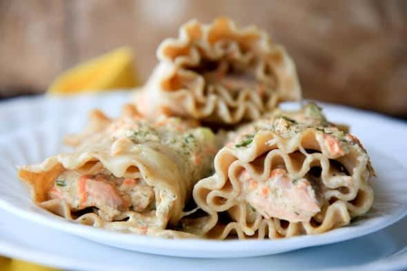

Salmon Alfredo Lasagna Rolls

Creamy Alfredo Lasagna Rolls with Parmesian White Sauce
These salmon lasagna rolls are made with deliciously flaky salmon, spinach, and mascarpone, then enhanced with a delightfully creamy sauce.
This is indulgent lunch or dinner option is just a perfect recipe for two people, without giant baking dishes!
Ingredients (4 servings):
- 4 sheets of lasagna, cooked
- 8 oz fillet of salmon
- 4 cups spinach
- 16 oz ricotta cheese, strained
- 1.5 cups asiago or fontina cheese
- 1/2 tsp cumin
- Pinch red pepper flakes
- 1/4 cup butter
- 1 cup heavy cream
- 1.5 cup parmesan cheese
- 1 tbsp canola oil
- Salt & pepper
- Parsley
Cooking Steps
- Prepare Alfredo sauce by melting butter. Add cream, simmer 5 minutes, then whisk in parmesan. Set aside.
- Heat salmon in canola oil for 5-6 minutes. Remove fish and add spinach to wilt down. Pre-heat oven to 400°F.
- Mix ricotta with 1 c. asiago or fontina cheese, cumin and red pepper.
- Coat lasagna sheets with ricotta mix, then spinach and salmon pieces. Roll into logs, top with remaining cheese and bake in Alfredo sauce for 15-20 minutes. Top with parsley.